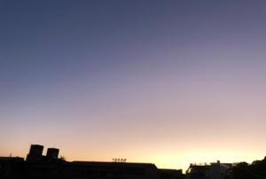

うるがいの話 ある日
最新: ＠ニフティうるがいとは 前提知識です
カニの画像をクリックすると『うるがいの話』サイトを表示します|
|
【うるがいの話】 うるがい(ｳﾙｶﾞｲ urugai)とは、『もずくがに』の名前でとても大きくなります。 |
|---|---|
|
|
【Got cat カミマヤーの話】 たながー（ﾀﾅｶﾞｰtanagaa）とは手長えびのことで、何種類かあり大きいのは車 エビぐらいになります。 |

|
【ぶながぁの話】 ぶながー(bunagaa)とは、赤い髪の毛、赤い身体、そして身長は１ｍ２０ｃｍ ぐらい、川の蟹を食べているの目撃された。場所は沖縄県国頭郡大宜味村のと ある村僕の隣近所に住んでいる爺さんから、聞いた話です。 |
|
|
【ギーマの話】 ギーマ(giima)とは、山原の里山に咲くスズランに似た、 花を付けます。実は食べられます、 気が付くと口の周りが紫になっています。 |
2021年10月26日 (火）＠ニフティ
15:22

私のインターネットプロバイダはニフティを使用している。ホームページサー
ビスは当初は無料だったが、２０１６年に有料へ変更した。ただし、それまで
の利用者は一部機能の制限はあるが、無料のミニ版へ移行でき今に至っている
ホームページのアクセスカウンター機能を調べていたら、ニフティは無料で利
用できるとの古いページが検索された（今は出来ない！）。ついでに、有料サ
ービスを調べると一番安いサービスだと年間１，２５７円で利用できることが
分かった。ほほ、で気になることがあったので『HTTPSセキュアのサイトにな
りますか』等と質問を投げると次の回答が戻っていた。
ご連絡いただきました本件につきまして、詳細を確認させていただきました。
Lacoocanミニをご利用いただき、また、Lacoocanライトのご検討をいただき、
ありがとうございます。
Lacoocanミニのご契約に追加してLacoocanライトをご契約いただく場合、
Lacoocanミニのご契約は消失いたしません。
「＠niftyホームページサービス」につきましては、現在SSL機能に対応してお
りません。
また、大変恐縮ではございますが現状SSL機能に対応する予定はございません。
このたびはお客様のご要望にお応えすることができず、大変心苦しい限りでは
ございますが、何卒ご容赦くださいますようお願いいたします。
うう、今時か。今日、ＲＢＣラジオの久茂地ねえさんがＲＢＣのシステムがハ
ッキングされたと騒いでいたのに。＠ニフティの会社は、大丈夫だろうかと株
をしらべると右肩あがりになっている。結局有料サービスを使っても何もメリ
ットが無い事が分かった。
今朝、瞑想（妄想）していると何故か、今まで実現できなかった『夏休み』の
曲が楽譜ソフトで演奏できるとポーアンと閃く。朝の７時から、不完全な楽譜
のネタ達を眺めながら登録する。午前で出来上がった、ネットにある楽譜を集
めたものの、何も出来なかった７月２１日頃から、成長した。
『夏休み』 １分９秒
作品１４番（ユチューブ）